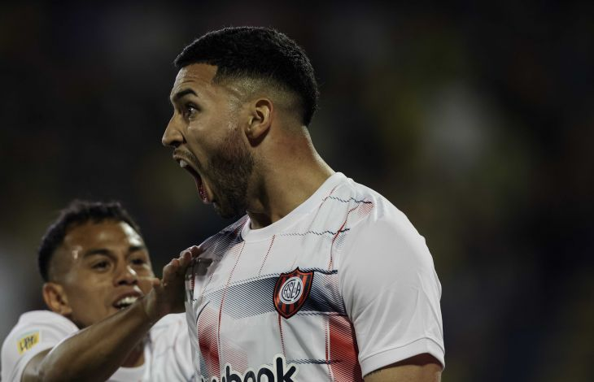

¡Golazo!
Triunfazo de San Lorenzo en Rosario: fue 1-0 a Central, por la fecha 22 del torneo. ¡Qué bombazo metió Bustos!
De vuelta de visitante. Y de vuelta con un golazo, para que San Lorenzo se haga fuerte en
Arroyito y consiga tres valiosos puntos. El Ciclón le ganó 1-0 a Central, en Rosario, con un
soberbio disparo de Nahuel Bustos, quien convirtió su primer tanto en el club. Un triunfo más
que celebrado, que infunde confianza y respalda el trabajo que Miguel Angel Russo y su cuerpo
técnico vienen realizando desde que asumieron.
No era una parada fácil, por supuesto, más allá del momento de Central. Para peor, en la previa
conmovió la noticia de que Iker Muniain, por un problema en el aductor derecho, no estaría ni
siquiera en el banco. Pero San Lorenzo volvió a hacerse sólido (Chila Gómez respondió con
solvencia cuando debió intervenir) y oportuno a la hora de convertir..
Había amagado en el primer tiempo, con un tiro de Cuello (que se desvió en un defensor) y
algunas maniobras de Bustos. Central, por su parte, había convertido pero el gol fue anulado a
instancias del VAR (por falta previa a Bustos, justamente) y luego no encontró los caminos.
Sobre el final, la más clara: un tremendo remate de Remedi que hizo esforzar a Broun, quien la
sacó espectacularmente al córner.
En el complemento, ya a los 16 minutos, Russo movió el banco: Vombergar por Cuello. Y cinco
minutos después, el que ingresó fue Barrios (por Leguizamón). En un trámite parejo, el que
acertara se podía quedar con todo. Y lo aprovechó el cordobés, que siempre se animaba en
partidos anteriores y nunca podía pegar el grito. Esta vez lo hizo y en gran forma: brillante
derechazo desde media distancia, que ingresó con violencia y dejó sin chances al arquero. A los
26, el Ciclón conseguía el 1-0.
Y pudo defenderlo bien, sin mayores apremios, e incluso tuvo alguna posibilidad para aumentar el
marcador. Por ejemplo, a los 41, cuando el Perrito armó un jugadón por la izquierda, dejando a
un par de hombres en el camino, y no consiguió definir con precisión.
Fue triunfo en el Gigante, nomás, para que San Lorenzo alcance los 28 puntos en la tabla. El
próximo domingo, durante la Fecha FIFA, el Ciclón recibirá desde las 17.30 a Racing, en el Pedro
Bidegain.